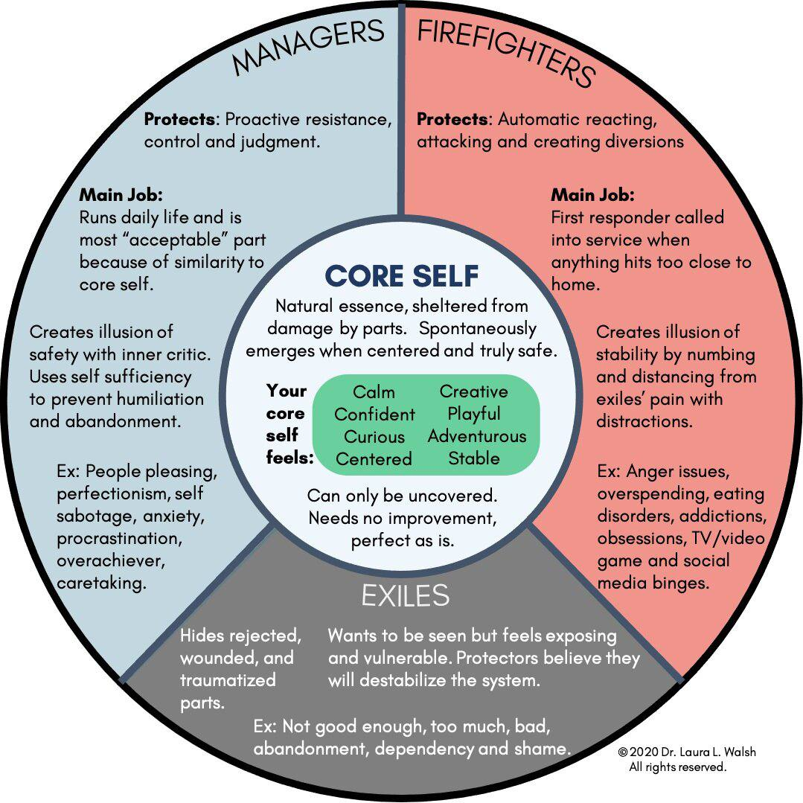

Этот тест основан на модели IFS (Internal Family Systems), которая рассматривает психику как систему внутренних "частей". Ответьте на вопросы, чтобы узнать, какие роли — Менеджеры, Пожарные, Изгнанники или ваше "Я" — наиболее активны в вашей жизни.
